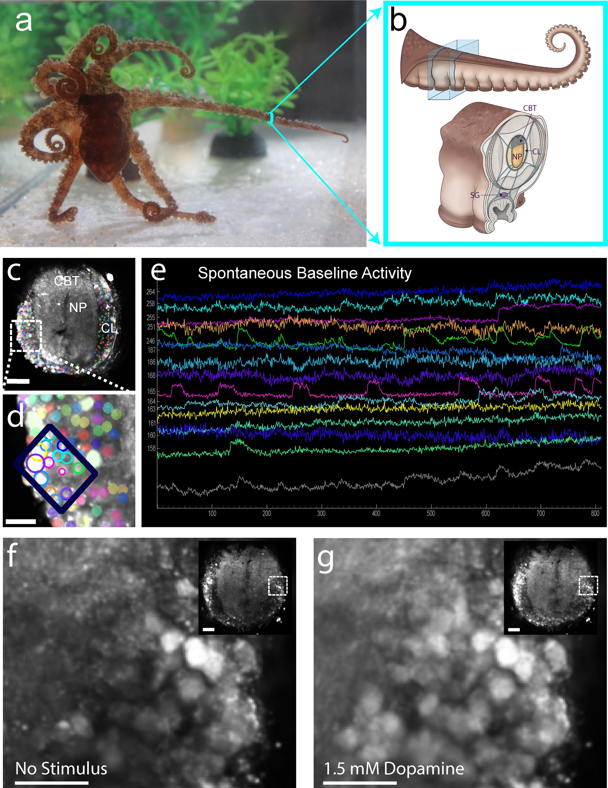

New paper! Do octopus arms follow a different set of rules?
Octopus arms can perform astonishingly complex movements. Their neurons, meanwhile, appear to have opted for open-plan seating.
I'm excited to share our new paper in iScience, Neurochemical control of decentralized octopus arm circuitry. This study builds on several years of work trying to understand how octopus arms process information and control their movements, and it has led me to consider some much bigger questions about how nervous systems are organized.
From mapping neurons to watching them work
In 2024, my colleagues and I published a three-dimensional molecular atlas of the octopus arm's axial nerve cord, the primary structure housing the neural circuitry running along each arm.
We wanted to know where different types of neurons were located and whether their arrangement might tell us something about how the arm works.
What we found was surprising and fascinating. There were plenty of different cell types, but most weren't organized into the distinct layers or clusters we often associate with specialized neural functions. Some showed loose spatial patterns, but others were thoroughly intermingled.
The next question was obvious, at least to me: what are all these neurons actually doing?
For this new study, we developed a preparation that allowed us to watch hundreds of neurons simultaneously in living slices of octopus arm tissue. We used a fluorescent calcium indicator to visualize changes in neuronal activity while applying different neurotransmitters, the chemical messengers that neurons use to communicate.

Getting that to work reliably took a fair amount of experimentation. Octopus arms are not particularly cooperative microscopy specimens. We had to get the fluorescent dye into enough neurons, keep the tissue healthy and active, and maintain a stable imaging field while delivering chemical stimuli, all in a preparation that can continue wriggling long after dissection. Then came the substantial task of analyzing recordings from hundreds of individual cells, for which I worked with colleagues to develop a custom analysis pipeline.
Eventually we produced something that our earlier molecular maps couldn't provide: a way to see how populations of arm neurons actually responded to chemical signals.
What we found
The neurotransmitters glutamate and dopamine activated large, overlapping populations of neurons. Many cells responded to both chemicals, and neurons with different response profiles were scattered throughout the tissue with no clear spatial segregation.
Next, we looked at serotonin.
Serotonin dramatically changed how the network responded to subsequent signals. When we applied serotonin before glutamate or dopamine, the number of neurons activated by those chemicals fell by roughly half.
This was especially interesting alongside our earlier anatomical findings. We now had both molecular and functional evidence that the local circuitry doesn't appear to follow many of the spatial organizational rules familiar from other nervous systems.
And that got me thinking about the movements these circuits have to produce.
An almost unlimited number of ways to move
An octopus arm has no bones or joints to restrict where it can bend. It can elongate, shorten, twist, stiffen, and bend at essentially any point along its length. In biomechanics, we describe this as having an almost unlimited number of degrees of freedom, meaning there are an extraordinary number of possible configurations the arm can take.
And as if that weren't enough, each arm also controls numerous suckers, which can independently manipulate and explore objects.
Think about what that means for a nervous system. A human arm has a relatively constrained collection of joints. An octopus arm has to coordinate movements across a continuously deformable structure while also managing sensory information and sucker activity along its length.
Researchers have been trying to understand how octopuses handle this problem for decades. In a 1996 study, Gutfreund and colleagues showed that octopuses simplify reaching movements by propagating a bend along the arm in a stereotyped pattern. Later experiments demonstrated that some of these motor programs are embedded in the peripheral arm circuitry itself.
More recently, my colleague Chelsea Bennice and her coauthors studied how wild octopuses use their arms. They found that all eight arms were capable of nearly all the same actions, but the animals showed preferences in how they used them, with anterior arms used more frequently for reaching and posterior arms for certain locomotor movements. I love this finding because it illustrates how an octopus can use the same remarkably flexible structures in different ways depending on what it's doing.
So despite the enormous number of possible movements, the nervous system doesn't necessarily have to calculate every movement from scratch. It can use established patterns and combine or modify them.
But how does the circuitry generate that flexibility?
Here's where I start speculating.
What if the apparent lack of spatial segregation in the arm isn't simply an unusual feature of octopus neuroanatomy, but part of the solution to controlling such a flexible structure?
A nervous system organized into highly specialized, anatomically separated pathways may be very good at processing particular kinds of information. But might that kind of arrangement impose constraints when the same tissue needs to perform an enormous variety of movements?
Perhaps the octopus arm benefits from having neuronal populations that can participate in different functional networks depending on the chemical signals they receive. Rather than requiring entirely separate pathways for each activity, overlapping groups of neurons could be recruited and adjusted to suit the task at hand.
To be clear, that is not something we've demonstrated. We haven't yet linked these neurochemical responses to specific movements, and the arm certainly has important anatomical organization, including repeating ganglia and internal structural patterns associated with its suckers. But I think the possibility that chemical modulation provides another layer of flexible control is worth investigating.
What about elephant trunks and tongues?
Octopus arms aren't the only structures that face this problem.
Elephant trunks and mammalian tongues are also examples of muscular hydrostats. These are structures that use arrangements of muscle to change shape and generate movement without relying on a rigid internal skeleton.
The connection between these seemingly unrelated structures has been recognized for decades. Kier and Smith described their shared biomechanics in a wonderfully titled paper, Tongues, tentacles and trunks.
More recently, researchers studying elephant trunks found that elephants manage their remarkable range of movement partly by combining a limited repertoire of basic movements. They can even temporarily create functional joints in a structure that has no actual joints. (Dagenais et al., 2021)
That sounds remarkably familiar to what researchers have observed in octopus arms.
Tongues offer another interesting comparison. In a 2023 study, researchers recorded neural activity in the brains of macaques while tracking the changing shapes of their tongues during feeding. They found that neural population activity contained information about the tongue's complex three-dimensional movements and deformations.
Of course, these studies don't establish that elephant trunks, tongues, and octopus arms use the same neural organization. They don't even examine the same parts of the nervous system. But they highlight a shared challenge: how do neural circuits coordinate precise, complex movements in structures that aren't constrained by a rigid skeleton?
I'm particularly curious whether evolution has arrived at similar neural solutions in these very different animals, or whether their shared mechanical challenges have led to fundamentally different approaches.
Where do we go from here?
Our study gives us a first look at how large populations of neurons in the octopus arm respond to different neurotransmitters, and how those responses depend on the chemical context.
The next challenge is figuring out how that activity relates to the actual function of the arm. Are different combinations of neurotransmitters associated with different motor states? How does this modulation vary along the arm or between sucker-associated neural modules? Can the same neuronal populations participate in different patterns of activity depending on what the arm is doing?
And, perhaps most interesting to me, are these organizational features especially useful for controlling a structure with so many possible movements?
There's another question I'm increasingly interested in: could these same features also help neural circuits maintain coordinated activity when environmental conditions change? Temperature and seawater chemistry can affect how neurons communicate, and I wonder whether having overlapping, chemically tunable neuronal populations might give a circuit more ways to compensate when its physiology is challenged. That's a hypothesis I hope to test through comparative studies of different molluscan nervous systems, and a subject I'll explore in more detail in a future post.
I don't yet know the answers, but these are exactly the kinds of questions that keep me interested in comparative neurobiology. Animals have evolved an extraordinary range of nervous systems, and I suspect we still have a lot to learn about what neural organization can look like and how those differences influence what nervous systems are capable of.
Acknowledgments
This research was carried out in the Crook Lab at San Francisco State University, led by Dr. Robyn Crook, whose work explores the evolution and function of cephalopod nervous systems. It was supported by Robyn's Allen Distinguished Investigator award in Neural Circuit Design from the Paul G. Allen Frontiers Group, as well as funding from the National Science Foundation.
Robyn has been an extraordinary supporter of my research, providing scientific guidance, encouragement, and the opportunity to pursue some pretty ambitious questions. I'm particularly grateful for the freedom she's given me to explore new directions and develop my own research interests. Her support has meant a great deal to me throughout this work.
I'm also grateful to my coauthors, our colleagues in the Crook Lab, and everyone who helped develop the imaging methods and analysis tools that made this study possible.
Read the paper: Neurochemical control of decentralized octopus arm circuitry